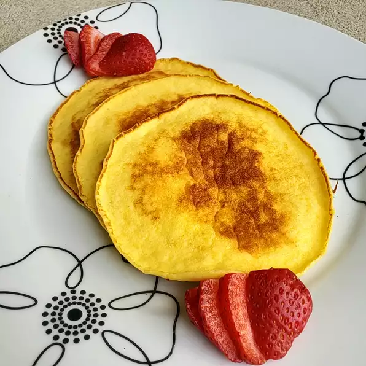

Sour Cream Pancake

Description
This recipe was passed to me by a friend and has become my families all time favorite pancake recipe. I always have sour cream on hand because I enjoy cooking with sour cream and we eat a lot of Mexican dishes. No longer will I be buying store bought mixes or using other recipes. This pancake recipe will seem odd because it has very little flour in it. The batter is very fluffy, which makes for a light, airy pancake, and the sour cream gives it a nice tangy
Ingredients
- ½ cup all-purpose flour
- 2 teaspoons baking powder
- 2 teaspoons sugar
- 1 teaspoon salt
- 2 cups sour cream
- 4 large eggs eggs
- 1 teaspoon vanilla extract
- butter to taste
- maple syrup
Steps
- slowly preheat your giddle or skillet to medium-low heat. one mpirtant tip here is to be patient and wait for your skillet to preheat completetly until nice and hot.
- combine
the all-purpose flour, baking soda, sugar, and salt in a bowl. next, grab your sour cream and dump it onn top of yoyr dry Ingredients. genly mox these Ingredientstogether; better may be slightly lumpy and that is okay!
- in a separate bowl, whisk together eggs and vanila, the add this to your sour cream mixture. again, genly stir together, do not over mix!
-
heat about 1 tablespoon of butter in your preheated skiller or griddle. use a 1/4 cup measure to drop pancake batter onto the griddle or skillet. allow pancakes to cook for approximately 2 to 3 minutes on one side, or until bubbles appear alllover the suface of your pancake, the flip. continue cooking your pancakesfor another 1 to 2 minutes on the other side.
-
serve a stacl of pancakes at a time, and don't forget the butter and syrup on top!
More Recipes